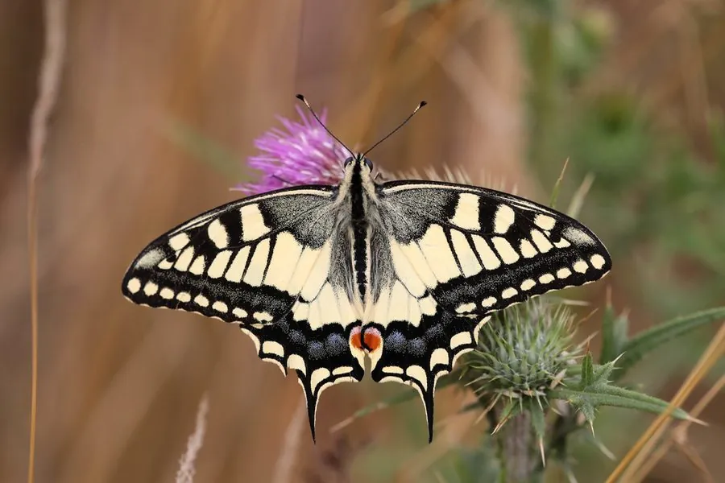

昆虫 · 动物界
金凤蝶 Papilio machaon

翅面金黄、饰有黑色斑纹与细长尾突的常见凤蝶，幼虫取食茴香等伞形科植物，广布北半球，体态优雅。
- 分类
- 门节肢动物门纲昆虫纲目鳞翅目科凤蝶科属凤蝶属
- 栖息环境
- 草原、山地草甸、农田边缘与花园，寄主植物附近活动
- 地理分布
- 欧洲、亚洲和北美洲北部的温带地区
- 保护级别
- 暂无评估；英国亚种受严格保护
物种志
金凤蝶翅展约 6.5–9 cm，翅面底色金黄，翅脉和边缘黑色，后翅外缘有蓝色斑纹和橙红色眼斑，并拖着细长的尾突。翅背面颜色较淡，停歇时双翅合拢，露出斑驳的浅黄色底面。身体黄色，胸部和腹部有黑色纵纹。成虫飞行迅速，常在花间吸蜜，喜欢访问伞形科和菊科植物的花。
幼虫取食茴香、胡萝卜、芹菜等伞形科植物，受惊时会从头部翻出橙色的丫腺，释放刺鼻气味驱赶天敌。一年可发生 1–3 代，以蛹越冬。金凤蝶广布欧洲、亚洲和北美洲北部的温带地区，是欧亚大陆最常见的凤蝶之一；英国亚种仅存于诺福克湿地，受到严格保护。该物种由林奈于 1758 年命名，并且是凤蝶属的模式种。
形态与习性
- 食性成虫吸蜜；幼虫取食茴香、胡萝卜等伞形科植物
- 翅展约 6.5–9 cm
- 寿命成虫约 2–3 周，以蛹越冬
- 防御幼虫受惊时翻出橙色臭角腺，释放刺鼻气味
- 繁殖雌蝶在寄主嫩叶上产卵，一年可发生 1–3 代
- 分类地位凤蝶属的模式种，林奈 1758 年命名
趣味知识
- 凤蝶属由林奈于 1758 年建立，金凤蝶是该属的模式种。
- 幼虫受惊时会伸出橙色丫腺，散发类似腐果的刺鼻气味。
- 英国亚种仅存于诺福克湿地，是当地重点保护的昆虫。